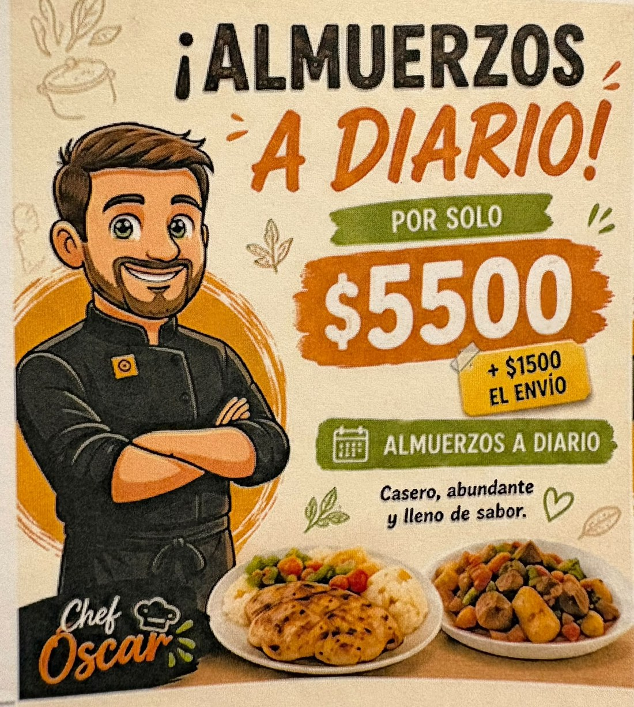
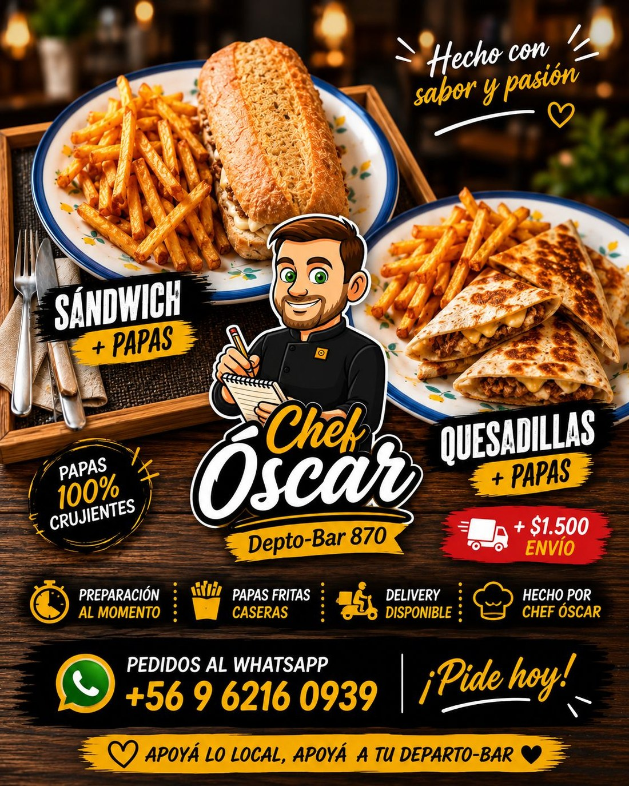

Almuerzos a diario
Ideal para destacar el menú casero del día, precio referencial y envío.
Se incorporaron las imágenes entregadas como apoyo visual de la página y como referencia de estilo comercial.

Ideal para destacar el menú casero del día, precio referencial y envío.

Referencia para platos rápidos, papas caseras y delivery disponible.
La web usa una estética cálida y comercial: fondo oscuro tipo madera, acentos amarillos/naranjos, botones de WhatsApp, tarjetas de menú y llamados a la acción claros.